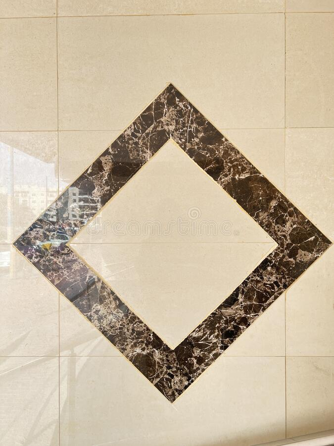

The border-image-repeat property specifies whether the border image should be repeated, rounded, spaced or stretched:
Here, the image is stretched to fill the area.
Here, the image is tiled to fill the area. Tiles are divided if necessary.
Here, the image is tiled to fill the area. The image is rescaled if necessary, to avoid dividing tiles.
Here, the image is tiled to fill the area. Extra space is distributed around the tiles if necessary.
Here is the original image:
Note: Internet Explorer 10, and earlier versions, do not support the border-image-repeat property.